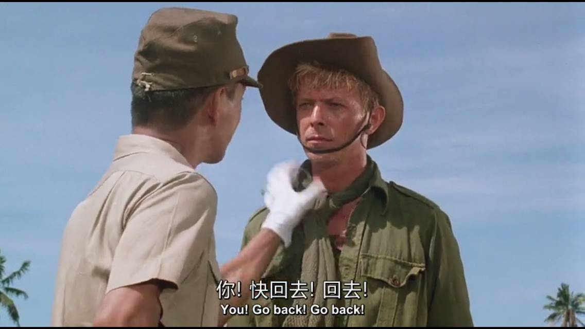

电影|圣诞快乐，劳伦斯先生
原来听熊光的《merry Christmas》，就特别喜欢它的作曲，后来知道原曲叫《merry Christmas Mr.Lawrence》，并且是同名电影的插曲，于是就去看了。
今天我重温这首歌，跟着把电影也重温了一遍，感触不减当年，不如说还产生了一些新的想法。
那是二战进行得如火如荼，日本在亚洲各地迅速扩张侵略之际，东南亚的一个战俘营中。
开场，原上士在审问一个犯了错的日本士兵，原因是他被怀疑为同性恋，与一名荷兰人俘虏有往来。
虽然同性恋行为在军队中是随处可见的，但是以纪律严明著称的日本军队，却绝对不会容许这种事，这被看作精神散漫和怠惰的表现。而被允许以切腹的方式了结生命，对于一个做了如此耻辱之事的武士来说，已经属于无比光荣和幸运的了。
劳伦斯是一名英军将领，被俘之后担任原上士的翻译。身为西洋人的他，无法理解日本军队中切腹（ps一下为什么日本人喜欢切腹，因为他们认为人的灵魂是长在肚子里的...）这种残忍的处决方法，毕竟，在英军中，自杀是比被杀，被俘虏更为残酷的事情，主动放弃自己的生命才是最可耻的，是逃避和懦弱的表现。所以，面对这样不人道的处决，他当然要极力阻拦。
于是，在战争这一残酷的背景下，在巨大的文化信仰差异之下，一场心理的博弈和感情纠葛展开了。
男主世野井是日军的一名高级将领，身着传统剑道服前来阻止原上士的暴戾行为。无论是举止还是谈吐，比起粗鲁暴躁的原都更具涵养，而对待俘虏宽容温和的态度，也显然与其他日本士兵的轻蔑和鄙夷不同。
在出席一次审问会时，世野井邂逅了另一名男主杰克。杰克在法庭上不卑不亢的风度和英俊的相貌，都深深吸引着世野井。
从审判员的态度中，我们也可以看到，日本人对于西洋人这种“投降保命”，并且不以为耻反以为荣的态度，是完全不能理解的。所以他们对杰克很是轻蔑，认为他是一个懦夫，并欲给他定罪。
与武断的审判员和法官不同，世野井起身了，他询问杰克一些作战时的细节，并想为他辩驳。（一定是出于私心吧嘿嘿嘿）
由于世野井的努力，杰克暂时保住了性命，与其他战俘一起被关押了起来。
影片中经常有这样的画面：一群群被俘的士兵，拖着因营养不良和伤痛而苍白羸弱的病体，暴露在热带的阳光之下，扛着劳动工具缓缓前行。
无论在谁看来，这样的情景都是让人痛心和同情的。然而，身为日本军官的世野井却不这么认为，在一次与英军俘虏首领的冲突中，他惩罚全体俘虏禁闭48小时，期间不能进食饮水。在世野井看来，通过这种修行（日文作gyo），能够移除精神上的懒惰，克服薄弱的意志，没错，通过饥饿来克服饥饿。
为什么看似温和有礼的世野井此时做出了这样残忍的事，其实，这并非单纯的对俘虏的虐待，日本军人自身也常进行这种修行，他们深信这种行为真的可以使人的身心坚强。也可以说，世野井的形象就是日本矛盾的民族精神的一个浓缩，极端优雅美丽，又极端尚武残酷。
别说是那时候的西洋人了，就是现在的我们，也很难理解日本人这种强调绝对的精神和意志可以战胜一切肉体痛苦的想法。

要解释这种想法，追根溯源，就要说到日本人的信仰——天皇。也许有人无法理解日本人对天皇为何如此崇敬。不像中国的皇帝，欧洲的国王，权利再高，也是人类，在日本的神话传说中，天皇是创造了日本列岛的诸神的后裔，也就是神明本身。不像古代欧洲和中国的政教分离形式，日本自古以来就是一个政教合一的国家，虽然战国以后天皇大权旁落，但日本人对天皇的信仰早已在历史中积淀下来，根深蒂固。将日本人对天皇的信仰转化为愿意献出生命的服从，将战争神化为捍卫天皇的荣誉和尊严，将战死当作为天皇献身的无上光荣，将身体的疾病和饥饿归咎于意志的软弱——因为日本国内资源无法满足长期大规模作战的需要，只能如此宣传。这也可以部分解释，为什么我们常常看到日本的士兵，在战后非但不反思自己在战争中做出暴行，甚至引以为荣，因为这种思想已经在他们心中深深根植。著名的《菊与刀》里也提到这个问题，以西洋人的视角剖析了日本人这种思想的由来。

上面的这段对话，更是直接展示了西洋人和日本人之间不同的生死观。在原看来，被俘后便无法再完成为天皇效忠的使命，失去生存价值，与其苟且偷生，不如漂亮地死去。而劳伦斯则认为，生命是自己的，只要还有一线生机就决不放弃，暂时作为一个俘虏活着并不屈辱，不敢直面恐惧忍受痛苦而选择自杀，才是真正的懦弱。
三岛由纪夫在《叶隐入门》（《叶隐》是一本阐述武士道精神的书）中如是写道：“倘或理想破碎却向生而生，乃是苟且。其思想意在自欺，可叹亦可悲。倘或理想破碎自我亦不惜与之玉碎，于他人而言不过犬死而已，然绝无可耻”；“武士道，乃求取死若归途之道”。这种思想与影片中原的思想是呼应的，既要活得精彩，更要死得漂亮，理想存则人存，理想忘则人亡。并不畏惧死亡，而是畏惧死得不漂亮，把优雅崇高的死亡当作人生的终极目标，恐怕世界上少有几个民族会像这样吧。
然而，保住性命的杰克却并不老实，甚至带领俘虏们造反，面对杰克的反复挑衅和对军营纪律的蔑视，世野井的内心开始动摇，他问过杰克这样一句话：“你是恶魔吗？”他把自己爱的人当成了恶魔，把自己对杰克的爱当成了恶魔的蛊惑。曾认为自己是无比正确的，认为遵守军中训诫，严格要求自己，所行走的道路就不会有偏颇。然而杰克出现了，做着种种打破他之前认知的行为，吸引着他，让他心绪紊乱，所以他将这一切归咎于自己修行不够，受了恶魔的蛊惑。
世野井说了，他对杰克感到失望。一天夜里，因为犯事被单独关押的杰克准备逃跑，刚好撞上路过世野井，两人拔刀相向，犹豫片刻后，杰克却扔掉了手里的刀，又被抓了回去。
世野井心中的狂躁达到了顶点，一天他召集来全体士兵，甚至无理取闹地把伤残人员也叫来，逼问俘虏首领交代军队情况，然而未果。愤怒之下，他拔出太刀准备当场处刑首领。
就在这时，杰克毅然走了出来，走向了狂躁的世野井，不顾威吓和阻拦，抱住世野井，在他脸上吻了两下。

后来世野井昏过去了（我可以理解为开心得晕过去了吗），杰克也被愤怒的士兵围起来殴打，在他们看来，这是对他们长官的严重冒渎。
做了这种事的杰克，当然难逃一死，事实上为了赎罪，他也不想逃避了。（杰克的弟弟过去被人欺侮，他却没有出手相救，他认为这给弟弟造成了伤害并一直感到自责）他被埋进一个大沙坑里，活活被太阳晒死。
那天晚上，世野井来了，他默默地遣散了守卫的士兵，走到杰克身后，用小刀割了一撮头发他的头发，小心地包好放入怀中。然后绕到杰克的正面，低下头庄重地行了一个军礼。其实那时候杰克还有一丝气息，然而世野井全程没有说一个字，他用这种沉默的方式，完成了对杰克——他爱的人的最后道别。
战争结束，日本败降，世野井被处决，而原上士也即将受刑。临刑前夜，已经恢复军官身份的劳伦斯来看望他。
原很显然也没有对自己昔日的罪行感到罪恶——他认为战争不过是完成自己的使命罢了，日本战败，理想破碎，那么自然只有一死，所以面对死亡，他丝毫不感到恐惧。

在狭窄的牢房中，两人并肩坐下，回忆着俘虏营中的种种过去，甚至开起了玩笑，像是久别重逢的旧友。在两个昔日敌人愉快的对话中，竟让人在悲凉之余感到一丝温暖。
有很多优秀的反战片，可以拍出战争的残酷和绝望，用以警醒世人。但这部影片向我们展现的，却是在残酷的战争中跨越了一切的爱的伟大和人性的光辉。肤色不同，信仰不同，立场不同，价值取向不同，可以说几乎无一相似的人们之间，却也可以产生温暖的感情，无论是世野井和杰克，还是劳伦斯和原。
而且本片的导演自己就是日本人（我一开始以为是欧美人拍的电影）。影片审视了战争中日本士兵的心理，并且毫不留情地批判了武士道精神在战争中带来的危害。这种从根源上批判自己的民族精神，客观地自我检讨和反省勇气，是最让我佩服的。
一刷的时候在被子里迷迷糊糊地看完，也没来得及认真分析这部影片，这次从日本武士道精神的角度浅析了一下，肯定还有很多不完善不准确的地方。然而好的影片就是这样的，值得反复回味，并且每一次都会有不同的感受，以后三刷四刷的时候，可能又会有不同的发现。
再多嘴一句，这两个颜值炸裂的男主都是音乐家，而且电影里那些好听到炸裂的bmg都是饰演世野井的坂本龙一写的，人生赢家真好啊...
最后用又小又灰的字体厚颜无耻地来求转发留言点赞...如果你觉得文章还不错的话，因为左下角的数字将决定我下次更新的周期。